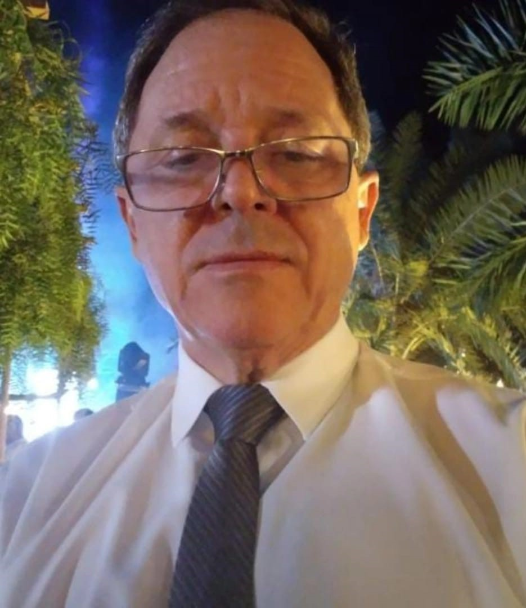

José Raimundo de Carvalho, aos 62 anos, é um intelectual multidisciplinar cuja trajetória acadêmica e profissional transita entre o Direito,
a Psicanálise e a Teologia, sempre com um olhar humanista voltado para o cuidado integral do ser humano.
Sua formação eclética e sua atuação em diferentes áreas do conhecimento revelam um pensador comprometido com a justiça,
o entendimento da psique humana e a reflexão filosófico-espiritual.
Graduado em Direito pela ITE (Instituição Toledo de Ensino), em Bauru/SP, e mestre na mesma área,
José Raimundo construiu uma sólida carreira jurídica, atuando como advogado e professor.
Sua dedicação ao magistério o levou a compartilhar seu conhecimento com novas gerações de profissionais,
sempre com um enfoque crítico e ético sobre as questões legais e sociais.

Além de sua atuação no campo jurídico,
especializou-se em Psicanálise Clínica pela Faculdade da Alma, em Rolândia/PR,
onde obteve autorização para exercer a profissão.
Essa formação permitiu-lhe aprofundar-se no estudo da mente humana, oferecendo acolhimento terapêutico a quem busca compreender suas angústias e conflitos.
Sua abordagem integra rigor teórico e sensibilidade, demonstrando como a psicanálise pode ser uma ferramenta de autoconhecimento e transformação.
Completando seu perfil multifacetado, é também graduado em Teologia pelo Instituto Teológico Pio XI, em São Paulo, o que lhe confere uma base filosófica e teológica para refletir sobre questões existenciais, éticas e espirituais.
Essa formação enriquece sua visão de mundo, permitindo-lhe dialogar com diferentes dimensões do pensamento humano.
José Raimundo de Carvalho é, portanto, um profissional que transcende as fronteiras disciplinares, unindo Direito, Psicanálise e Teologia em uma trajetória marcada pelo estudo aprofundado e pelo compromisso com o bem-estar das pessoas.
Sua vida e obra exemplificam como o conhecimento pode ser um instrumento de serviço, promovendo justiça, equilíbrio emocional e reflexão crítica sobre a condição humana.